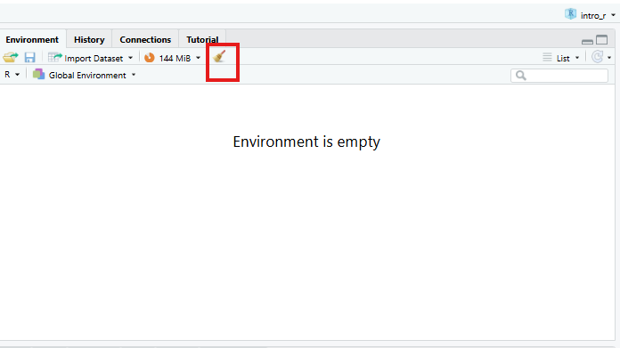
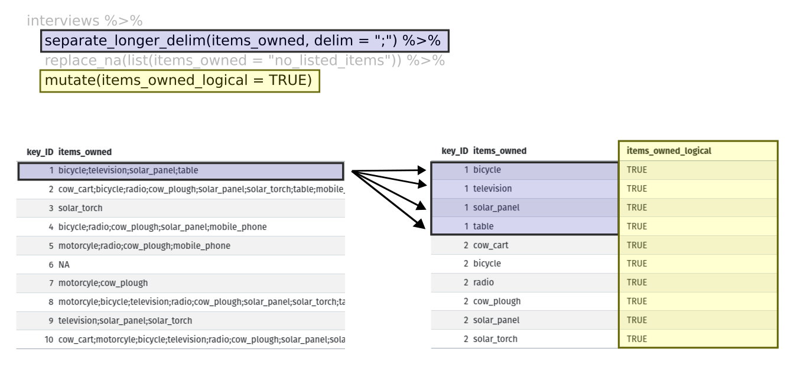

dplyr болон tidyr-р өгөгдлийг удирдах
Last updated on 2026-03-19 | Edit this page
Overview
Questions
- Дата фреймээс тодорхой мөр ба/эсвэл баганыг хэрхэн сонгох вэ?
- Хэрхэн олон командыг нэг команд болгон нэгтгэх вэ?
- Би хэрхэн шинэ багана үүсгэх эсвэл одоо байгаа баганыг a dataframe?
- Би өөрийн хэрэгцээг хангахын тулд өгөгдлийн хүрээг хэрхэн дахин форматлах вэ?
Objectives
-
dplyrфункцээр дата фреймийн тодорхой баганыг сонгоно ууselect. - Шүүлтийн нөхцлийн дагуу өгөгдлийн фреймийн тодорхой мөрүүдийг
сонгоно уу
dplyrфункцтэйfilter. - Нэг
dplyrфункцын гаралтыг нөгөөгийн оролттой холбоно уу ‘хоолой’ оператор%>%-тай функц. - Дата фреймд одоо байгаа функцүүд болох шинэ багана нэмнэ
mutate-тай баганууд. - Өгөгдлийн шинжилгээнд хуваах-хэрэглэх-комбинатлах үзэл баримтлалыг ашигла.
- Дата фреймийг хуваахын тулд
summarize,group_byболонcount-г ашиглана уу. ажиглалтын бүлгүүд, бүлэг тус бүрийн хувьд хураангуй статистикийг ашиглах, дараа нь үр дүнг нэгтгэнэ. - Өргөн ба урт хүснэгтийн форматын тухай ойлголтыг тайлбарлана уу Эдгээр форматууд нь ашигтай байдаг.
- Хувьсагчийн нэрсийн үүрэг, тэдгээртэй холбоотой утгуудыг тайлбарла ширээг өөрчлөх үед.
- Дата фрэймийн хэлбэрийг уртаас өргөн хэлбэрт шилжүүлж, буцаана
tidyr-ынpivot_widerболонpivot_longerтушаалууд багц. - Дата фреймийг
.csvфайл руу экспортлох.
dplyr нь хүснэгтэн мэдээлэл солилцоход
хялбар болгох багц юм задлахын тулд нэгтгэж болох хязгаарлагдмал багц
функцуудыг ашиглан өгөгдлөөсөө олж авсан мэдээллийг нэгтгэн дүгнэ. Энэ
бол эмх цэгцтэй байдлын нэг хэсэг бөгөөд тийм ч юм Хэрэв та
libary(tidyverse)-тэй tidyverse-ийг ачаалах үед автоматаар
ачаалагдана.
dplyr нь
tidyr-тэй сайн хосолсон нь танд хурдан өөр
өөр өгөгдлийн формат хооронд хөрвүүлэх (урт болон өргөн) график болон
шинжилгээ.
Анхаарна уу
dplyr,
tidyr гэсэн эмх цэгцтэй багцууд нь
хоёуланг нь хүлээн зөвшөөрдөг. Англи (жишээ нь * хураангуйлах) ба
америк (жишээ нь хураангуйлах*) зөв бичгийн дүрэм өөр өөр функц
болон сонголтын нэрсийн хувилбарууд. Энэ хичээлийн хувьд бид янз бүрийн
чиг үүрэг бүхий америк үсгийг ашиглах; Гэсэн хэдий ч мэдрэх Бүс нутгийн
хувилбарыг зааж байгаа газартаа үнэгүй ашиглах боломжтой.
Энэхүү семинарын дараа та dplyr-ын
талаар илүү ихийг мэдэхийг хүсч болно Үүнийг үзээрэй **dplyr**-тай ашигтай өгөгдөл хувиргах cheatsheet.
Семинарын дараа tidyr-ын талаар илүү
ихийг мэдэхийг хүсвэл энийг шалгана уу handy data tidying with **tidyr** cheatsheet.
Анхаарна уу
Өгөгдлийн маргаантай холбоотой tidyverse багцаас өөр
хувилбарууд байдаг. багцыг оруулаад data.table.
Үүнийг хар comparison
нь Жишээ нь base-ийг ашиглах хоорондын ялгааг ойлгохын
тулд, tidyverse, data.table.
Хүлээн зөвшөөрөлт
Энэхүү семинарыг Дата мужааны хичээлүүдийн материалыг ашиглан
тохируулсан R for Social Scientists,
ялангуяа lesson 03-dplyr,
болон lesson 04-tidyr
Бусад материал
Тохируулах
Өөрийн өмнөх
workshop, intro_r гэж нэрлэгддэг шинэ сесс.
global environment байгаа эсэхийг шалгаарай хоосон! Та мөн
дээр дарж global environment-ээ “шүүрдэж” болно
broom дүрс тэмдэг.

Шинэ R Notebook нээнэ үү:
Click File -> New File -> R Notebook. Хадгалаарай
R Notebook гэх мэт утга учиртай файлын нэртэй
manipulating_data.Rmd, scripts фолдерт.
Та шинэ R Notebook нээх үед зарим тайлбар текстийг өгсөн
болно. Энэ устгаж болох тул та өөрийн текст болон кодыг оруулах
боломжтой.
Бидний өмнө нь татсан SAFI өгөгдлийн багцаас уншина уу
in a previous workshop.
R
## load the tidyverse
library(tidyverse)
library(here)
interviews <- read_csv(here("data", "raw", "SAFI_clean.csv"), na = "NULL")
interviews # preview the data
Суралцаж байна dplyr
Бид хамгийн нийтлэг dplyr функцүүдийн
заримыг сурах болно:
-
select(): дэд багц баганууд -
filter(): нөхцөл дээрх дэд багц мөрүүд -
mutate(): бусдын мэдээллийг ашиглан шинэ багана үүсгэх баганууд -
group_by()болонsummarize(): бүлэглэсэн дээр хураангуй статистик үүсгэх өгөгдөл -
arrange(): илэрцийг эрэмбэлэх -
count(): салангид утгыг тоолох
Багануудыг сонгох, мөр шүүх
Датафрэймийн баганыг сонгохын тулд select()-г ашиглана
уу. Эхний аргумент Энэ функц нь өгөгдлийн фрейм
(interviews) ба дараагийнх юм аргументууд нь таслалаар
тусгаарлагдсан хадгалах багана юм. Эсвэл, Хэрэв та өөр хоорондоо
зэргэлдээ багануудыг сонгож байгаа бол :-г ашиглаж болно
баганын мужийг сонгохын тулд “___ баганыг сонгох” гэж уншина уу
___.”
R
# to select columns throughout the dataframe
select(interviews, village, no_membrs, months_lack_food)
# to do the same thing with subsetting
interviews[c("village","no_membrs","months_lack_food")]
# to select a series of connected columns
select(interviews, village:respondent_wall_type)
Тодорхой шалгуурын дагуу мөр сонгохын тулд бид
filter()-г ашиглаж болно функц. Дата фреймийн дараах
аргумент нь бидний хүсч буй нөхцөл юм дагаж мөрдөх эцсийн дата фрейм
(жишээ нь тосгоны нэр Chirodzo):
R
# filters observations where village name is "Chirodzo"
filter(interviews, village == "Chirodzo")
OUTPUT
# A tibble: 39 × 14
key_ID village interview_date no_membrs years_liv respondent_wall_type
<dbl> <chr> <dttm> <dbl> <dbl> <chr>
1 8 Chirodzo 2016-11-16 00:00:00 12 70 burntbricks
2 9 Chirodzo 2016-11-16 00:00:00 8 6 burntbricks
3 10 Chirodzo 2016-12-16 00:00:00 12 23 burntbricks
4 34 Chirodzo 2016-11-17 00:00:00 8 18 burntbricks
5 35 Chirodzo 2016-11-17 00:00:00 5 45 muddaub
6 36 Chirodzo 2016-11-17 00:00:00 6 23 sunbricks
7 37 Chirodzo 2016-11-17 00:00:00 3 8 burntbricks
8 43 Chirodzo 2016-11-17 00:00:00 7 29 muddaub
9 44 Chirodzo 2016-11-17 00:00:00 2 6 muddaub
10 45 Chirodzo 2016-11-17 00:00:00 9 7 muddaub
# ℹ 29 more rows
# ℹ 8 more variables: rooms <dbl>, memb_assoc <chr>, affect_conflicts <chr>,
# liv_count <dbl>, items_owned <chr>, no_meals <dbl>, months_lack_food <chr>,
# instanceID <chr>Мөн бид filter() функц дотор олон нөхцөлийг зааж өгч
болно. Бид “ба” эсвэл “эсвэл” хэллэгийг ашиглан нөхцөлүүдийг нэгтгэж
болно. онд “болон” мэдэгдэлд ажиглалт (мөр) нь бүх
шалгуурыг хангасан байх ёстой үр дүнгийн дата фреймд багтсан болно.
Дотор нь “ба” мэдэгдлийг бий болгох dplyr, бид хүссэн нөхцлөө
filter()-д аргумент болгон дамжуулж болно таслалаар
тусгаарлагдсан функц:
R
# filters observations with "and" operator (comma)
# output dataframe satisfies ALL specified conditions
filter(interviews, village == "Chirodzo",
rooms > 1,
no_meals > 2)
OUTPUT
# A tibble: 10 × 14
key_ID village interview_date no_membrs years_liv respondent_wall_type
<dbl> <chr> <dttm> <dbl> <dbl> <chr>
1 10 Chirodzo 2016-12-16 00:00:00 12 23 burntbricks
2 49 Chirodzo 2016-11-16 00:00:00 6 26 burntbricks
3 52 Chirodzo 2016-11-16 00:00:00 11 15 burntbricks
4 56 Chirodzo 2016-11-16 00:00:00 12 23 burntbricks
5 65 Chirodzo 2016-11-16 00:00:00 8 20 burntbricks
6 66 Chirodzo 2016-11-16 00:00:00 10 37 burntbricks
7 67 Chirodzo 2016-11-16 00:00:00 5 31 burntbricks
8 68 Chirodzo 2016-11-16 00:00:00 8 52 burntbricks
9 199 Chirodzo 2017-06-04 00:00:00 7 17 burntbricks
10 200 Chirodzo 2017-06-04 00:00:00 8 20 burntbricks
# ℹ 8 more variables: rooms <dbl>, memb_assoc <chr>, affect_conflicts <chr>,
# liv_count <dbl>, items_owned <chr>, no_meals <dbl>, months_lack_food <chr>,
# instanceID <chr>Мөн бид оронд нь & оператороор “ба” мэдэгдлийг
үүсгэж болно таслал:
R
# filters observations with "&" logical operator
# output dataframe satisfies ALL specified conditions
filter(interviews, village == "Chirodzo" &
rooms > 1 &
no_meals > 2)
OUTPUT
# A tibble: 10 × 14
key_ID village interview_date no_membrs years_liv respondent_wall_type
<dbl> <chr> <dttm> <dbl> <dbl> <chr>
1 10 Chirodzo 2016-12-16 00:00:00 12 23 burntbricks
2 49 Chirodzo 2016-11-16 00:00:00 6 26 burntbricks
3 52 Chirodzo 2016-11-16 00:00:00 11 15 burntbricks
4 56 Chirodzo 2016-11-16 00:00:00 12 23 burntbricks
5 65 Chirodzo 2016-11-16 00:00:00 8 20 burntbricks
6 66 Chirodzo 2016-11-16 00:00:00 10 37 burntbricks
7 67 Chirodzo 2016-11-16 00:00:00 5 31 burntbricks
8 68 Chirodzo 2016-11-16 00:00:00 8 52 burntbricks
9 199 Chirodzo 2017-06-04 00:00:00 7 17 burntbricks
10 200 Chirodzo 2017-06-04 00:00:00 8 20 burntbricks
# ℹ 8 more variables: rooms <dbl>, memb_assoc <chr>, affect_conflicts <chr>,
# liv_count <dbl>, items_owned <chr>, no_meals <dbl>, months_lack_food <chr>,
# instanceID <chr>“Эсвэл” гэсэн мэдэгдэлд ажиглалт нь дор хаяж нэгийг хангасан байх ёстой заасан нөхцөл. “Эсвэл” мэдэгдлийг бий болгохын тулд бид логикийг ашигладаг босоо мөр (|) болох “эсвэл”-ийн оператор:
R
# filters observations with "|" logical operator
# output dataframe satisfies AT LEAST ONE of the specified conditions
filter(interviews, village == "Chirodzo" | village == "Ruaca")
OUTPUT
# A tibble: 88 × 14
key_ID village interview_date no_membrs years_liv respondent_wall_type
<dbl> <chr> <dttm> <dbl> <dbl> <chr>
1 8 Chirodzo 2016-11-16 00:00:00 12 70 burntbricks
2 9 Chirodzo 2016-11-16 00:00:00 8 6 burntbricks
3 10 Chirodzo 2016-12-16 00:00:00 12 23 burntbricks
4 23 Ruaca 2016-11-21 00:00:00 10 20 burntbricks
5 24 Ruaca 2016-11-21 00:00:00 6 4 burntbricks
6 25 Ruaca 2016-11-21 00:00:00 11 6 burntbricks
7 26 Ruaca 2016-11-21 00:00:00 3 20 burntbricks
8 27 Ruaca 2016-11-21 00:00:00 7 36 burntbricks
9 28 Ruaca 2016-11-21 00:00:00 2 2 muddaub
10 29 Ruaca 2016-11-21 00:00:00 7 10 burntbricks
# ℹ 78 more rows
# ℹ 8 more variables: rooms <dbl>, memb_assoc <chr>, affect_conflicts <chr>,
# liv_count <dbl>, items_owned <chr>, no_meals <dbl>, months_lack_food <chr>,
# instanceID <chr>Хоолой
Хэрэв та нэгэн зэрэг сонгож, шүүхийг хүсвэл яах вэ? Гурав байна Үүнийг хийх арга замууд: завсрын алхмууд, үүрлэсэн функцууд эсвэл хоолойг ашиглах.
Завсрын алхмуудыг хийснээр та түр зуурын дата фрейм үүсгэж, үүнийг ашиглана дараах функцийн оролт болгон:
R
interviews2 <- filter(interviews, village == "Chirodzo")
interviews_ch <- select(interviews2, village:respondent_wall_type)
Энэ нь унших боломжтой боловч таны ажлын талбарыг олон объектоор дүүргэж болно та тус тусад нь нэрлэх хэрэгтэй. Олон алхам хийснээр ийм байж болно хянахад хэцүү.
Та мөн функцүүдийг (жишээ нь, нэг функцийг нөгөө функцийн дотор) үүрлэх боломжтой энэ:
R
interviews_ch <- select(filter(interviews, village == "Chirodzo"),
village:respondent_wall_type)
Энэ нь хялбар боловч хэт олон функцтэй бол уншихад хэцүү байж болно
R илэрхийллийг дотроос нь үнэлдэг тул үүрлэсэн (энэ
тохиолдолд, шүүж, дараа нь сонгох).
Сүүлийн сонголт бол * хоолой * юм. Хоолойнууд нь нэгнийх нь гаралтыг
авах боломжийг олгодог функц болон дараагийнх руу шууд илгээх нь танд
хэрэгтэй үед хэрэг болно нэг өгөгдлийн багцад олон зүйл хийх. Бид
tidyverse хоолойг ашиглана %>%-ийг дараах
байдлаар бичиж болно:
Ctrl+Shift+M (Windows ба
Linux) эсвэл Cmd+Shift+M
(Mac).
R
# the following example is run using magrittr pipe but the output will be same with the native pipe
interviews %>%
filter(village == "Chirodzo") %>%
select(village:respondent_wall_type)
OUTPUT
# A tibble: 39 × 5
village interview_date no_membrs years_liv respondent_wall_type
<chr> <dttm> <dbl> <dbl> <chr>
1 Chirodzo 2016-11-16 00:00:00 12 70 burntbricks
2 Chirodzo 2016-11-16 00:00:00 8 6 burntbricks
3 Chirodzo 2016-12-16 00:00:00 12 23 burntbricks
4 Chirodzo 2016-11-17 00:00:00 8 18 burntbricks
5 Chirodzo 2016-11-17 00:00:00 5 45 muddaub
6 Chirodzo 2016-11-17 00:00:00 6 23 sunbricks
7 Chirodzo 2016-11-17 00:00:00 3 8 burntbricks
8 Chirodzo 2016-11-17 00:00:00 7 29 muddaub
9 Chirodzo 2016-11-17 00:00:00 2 6 muddaub
10 Chirodzo 2016-11-17 00:00:00 9 7 muddaub
# ℹ 29 more rowsR
#interviews |>
# filter(village == "Chirodzo") |>
# select(village:respondent_wall_type)
Дээрх кодонд бид interviews өгөгдлийн багцыг илгээхийн
тулд хоолойг ашигладаг эхлээд filter()-р
village Chirodzo байх мөрүүдийг хадгалахын
тулд, дараа нь village-ээс зөвхөн баганыг хадгалахын тулд
select()-р дамжуулан respondent_wall_type.
%>% объектыг зүүн талд нь авч байгаа тул үүнийг баруун
талд байгаа функцийн эхний аргумент болгон дамжуулдаг, бид тэгдэггүй -д
аргумент болгон dataframe-г тодорхой оруулах шаардлагатай
filter() болон select() цаашид ажиллахгүй.
Зарим нь “дараа нь” гэсэн үг шиг гаансыг уншихад тустай байж магадгүй
юм. Учир нь Жишээ нь, дээрх жишээнд бид interviews дата
фреймийг авч, дараа нь бид
village == "Chirodzo"-тэй мөрүүдэд filter,
дараа нь select багана
village:respondent_wall_type.
dplyr функцууд нь зарим талаараа энгийн
боловч тэдгээрийг нэгтгэснээр хоолойтой шугаман ажлын урсгалын хувьд бид
илүү төвөгтэй өгөгдлийг хийж чадна маргаантай үйлдлүүд.
Хэрэв бид өгөгдлийн энэ жижиг хувилбараар шинэ объект үүсгэхийг хүсвэл, Бид түүнд шинэ нэр өгч болно:
R
interviews_ch <- interviews %>%
filter(village == "Chirodzo") %>%
select(village:respondent_wall_type)
interviews_ch
OUTPUT
# A tibble: 39 × 5
village interview_date no_membrs years_liv respondent_wall_type
<chr> <dttm> <dbl> <dbl> <chr>
1 Chirodzo 2016-11-16 00:00:00 12 70 burntbricks
2 Chirodzo 2016-11-16 00:00:00 8 6 burntbricks
3 Chirodzo 2016-12-16 00:00:00 12 23 burntbricks
4 Chirodzo 2016-11-17 00:00:00 8 18 burntbricks
5 Chirodzo 2016-11-17 00:00:00 5 45 muddaub
6 Chirodzo 2016-11-17 00:00:00 6 23 sunbricks
7 Chirodzo 2016-11-17 00:00:00 3 8 burntbricks
8 Chirodzo 2016-11-17 00:00:00 7 29 muddaub
9 Chirodzo 2016-11-17 00:00:00 2 6 muddaub
10 Chirodzo 2016-11-17 00:00:00 9 7 muddaub
# ℹ 29 more rowsЭцсийн дата фрейм (interviews_ch) нь хамгийн зүүн хэсэг
гэдгийг анхаарна уу энэ илэрхийлэл.
Дасгал хийх
Хоолойг ашиглан interviews-н өгөгдлийг хаана ярилцлага
оруулахаар дэд тохируулна уу Судалгаанд оролцогчид нь усалгааны
нийгэмлэгийн гишүүн байсан (ОРЧИН ЭЗЭН0) болон зөвхөн
affect_conflicts, liv_count,
no_meals багануудыг хадгална.
R
interviews %>%
filter(memb_assoc == "yes") %>%
select(affect_conflicts, liv_count, no_meals)
OUTPUT
# A tibble: 33 × 3
affect_conflicts liv_count no_meals
<chr> <dbl> <dbl>
1 once 3 2
2 never 2 2
3 never 2 3
4 once 3 2
5 frequently 1 3
6 more_once 5 2
7 more_once 3 2
8 more_once 2 3
9 once 3 3
10 never 3 3
# ℹ 23 more rowsМутаци хийх
Ихэнхдээ та доторх утгууд дээр тулгуурлан шинэ багана үүсгэхийг хүсэх
болно одоо байгаа баганууд, жишээ нь нэгж хөрвүүлэлт хийх, эсвэл олох
хоёр баганад байгаа утгуудын харьцаа. Үүний тулд бид
mutate()-г ашиглана.
Бид өрхийн гишүүдийн тоо, харьцааг сонирхож магадгүй юм Унтахад ашигладаг өрөөнүүд (өөрөөр хэлбэл нэг өрөөнд ногдох хүмүүсийн дундаж тоо):
R
interviews %>%
mutate(people_per_room = no_membrs / rooms)
OUTPUT
# A tibble: 131 × 15
key_ID village interview_date no_membrs years_liv respondent_wall_type
<dbl> <chr> <dttm> <dbl> <dbl> <chr>
1 1 God 2016-11-17 00:00:00 3 4 muddaub
2 2 God 2016-11-17 00:00:00 7 9 muddaub
3 3 God 2016-11-17 00:00:00 10 15 burntbricks
4 4 God 2016-11-17 00:00:00 7 6 burntbricks
5 5 God 2016-11-17 00:00:00 7 40 burntbricks
6 6 God 2016-11-17 00:00:00 3 3 muddaub
7 7 God 2016-11-17 00:00:00 6 38 muddaub
8 8 Chirodzo 2016-11-16 00:00:00 12 70 burntbricks
9 9 Chirodzo 2016-11-16 00:00:00 8 6 burntbricks
10 10 Chirodzo 2016-12-16 00:00:00 12 23 burntbricks
# ℹ 121 more rows
# ℹ 9 more variables: rooms <dbl>, memb_assoc <chr>, affect_conflicts <chr>,
# liv_count <dbl>, items_owned <chr>, no_meals <dbl>, months_lack_food <chr>,
# instanceID <chr>, people_per_room <dbl>-ийн гишүүн эсэхийг судлах сонирхолтой байж магадгүй Өрхийн гишүүдийн
харьцаанд усалгааны холбоо ямар нэгэн нөлөө үзүүлсэн өрөөнүүд рүү. Энэ
харилцааг харахын тулд бид эхлээд өгөгдлийг устгах болно эсэх гэсэн
асуултад хариулагч хариулаагүй бидний мэдээллийн багц Тэд усалгааны
нийгэмлэгийн гишүүн байсан. Эдгээр тохиолдлууд өгөгдлийн багцад
NULL гэж бүртгэгдсэн.
Эдгээр тохиолдлыг арилгахын тулд бид filter()-г гинжин
хэлхээнд оруулж болно:
R
interviews %>%
filter(!is.na(memb_assoc)) %>%
mutate(people_per_room = no_membrs / rooms)
OUTPUT
# A tibble: 92 × 15
key_ID village interview_date no_membrs years_liv respondent_wall_type
<dbl> <chr> <dttm> <dbl> <dbl> <chr>
1 2 God 2016-11-17 00:00:00 7 9 muddaub
2 7 God 2016-11-17 00:00:00 6 38 muddaub
3 8 Chirodzo 2016-11-16 00:00:00 12 70 burntbricks
4 9 Chirodzo 2016-11-16 00:00:00 8 6 burntbricks
5 10 Chirodzo 2016-12-16 00:00:00 12 23 burntbricks
6 12 God 2016-11-21 00:00:00 7 20 burntbricks
7 13 God 2016-11-21 00:00:00 6 8 burntbricks
8 15 God 2016-11-21 00:00:00 5 30 sunbricks
9 21 God 2016-11-21 00:00:00 8 20 burntbricks
10 24 Ruaca 2016-11-21 00:00:00 6 4 burntbricks
# ℹ 82 more rows
# ℹ 9 more variables: rooms <dbl>, memb_assoc <chr>, affect_conflicts <chr>,
# liv_count <dbl>, items_owned <chr>, no_meals <dbl>, months_lack_food <chr>,
# instanceID <chr>, people_per_room <dbl>! тэмдэг нь is.na() функцийн үр дүнг
үгүйсгэдэг. Тиймээс, хэрэв is.na() нь TRUE-ийн
утгыг буцаана (учир нь memb_assoc нь байхгүй),
! тэмдэг нь үүнийг үгүйсгэж, бид зөвхөн утгыг хүсч байна
гэж хэлдэг memb_assoc дугагүй байгаа
FALSE.
Дасгал хийх
interviews өгөгдлөөс шинэ дата фрейм үүсгэнэ үү дараах
шалгуурууд: зөвхөн village багана болон шинэ баганыг
агуулна нийттэй тэнцүү утгыг агуулсан total_meals гэж
нэрлэдэг Өрхөд өдөрт дунджаар идсэн хоолны тоо (no_membrs
удаа no_meals). Зөвхөн total_meals нь 20-оос
их байгаа мөрүүд эцсийн өгөгдлийн фреймд харуулах ёстой.
Зөвлөгөө: Үүнийг гаргахын тулд тушаалуудыг хэрхэн захиалах талаар бодож үзээрэй өгөгдлийн хүрээ!
R
interviews_total_meals <- interviews %>%
mutate(total_meals = no_membrs * no_meals) %>%
filter(total_meals > 20) %>%
select(village, total_meals)
Split-apply-combine өгөгдлийн шинжилгээ болон
summarize() функц
Мэдээллийн дүн шинжилгээ хийх олон даалгаврыг ашиглан хандаж болно
split-apply-combine парадигм: өгөгдлийг бүлэг
болгон хувааж, заримыг нь хэрэглээрэй бүлэг бүрт дүн шинжилгээ хийж,
дараа нь үр дүнг нэгтгэнэ. dplyr хийдэг
group_by() функцийг ашигласнаар энэ нь маш хялбар юм.
summarize() функц
group_by() нь ихэвчлэн summarize()-тэй хамт
ашиглагддаг бөгөөд энэ нь нурдаг бүлэг бүрийг тухайн бүлгийн нэг
эгнээний хураангуй болгон. group_by() авна
категорийн хувьсагчдыг агуулсан баганын нэрийг аргумент
болгон бичнэ Үүний тулд та хураангуй статистикийг тооцоолохыг хүсч
байна. Тиймээс тооцоолох Өрхийн дундаж хэмжээ тосгоноор:
R
interviews %>%
group_by(village) %>%
summarize(mean_no_membrs = mean(no_membrs))
OUTPUT
# A tibble: 3 × 2
village mean_no_membrs
<chr> <dbl>
1 Chirodzo 7.08
2 God 6.86
3 Ruaca 7.57Та мөн олон баганаар бүлэглэж болно:
R
interviews %>%
group_by(village, memb_assoc) %>%
summarize(mean_no_membrs = mean(no_membrs))
OUTPUT
`summarise()` has regrouped the output.
ℹ Summaries were computed grouped by village and memb_assoc.
ℹ Output is grouped by village.
ℹ Use `summarise(.groups = "drop_last")` to silence this message.
ℹ Use `summarise(.by = c(village, memb_assoc))` for per-operation grouping
(`?dplyr::dplyr_by`) instead.OUTPUT
# A tibble: 9 × 3
# Groups: village [3]
village memb_assoc mean_no_membrs
<chr> <chr> <dbl>
1 Chirodzo no 8.06
2 Chirodzo yes 7.82
3 Chirodzo <NA> 5.08
4 God no 7.13
5 God yes 8
6 God <NA> 6
7 Ruaca no 7.18
8 Ruaca yes 9.5
9 Ruaca <NA> 6.22Гаралт нь гурван баганаар есөн эгнээ бүхий бүлэглэсэн tibble гэдгийг
анхаарна уу Үүнийг #-тэй эхний хоёр мөрөнд заана. авахын
тулд Бүлэглэлгүй tibble, ungroup функцийг ашиглана уу:
R
interviews %>%
group_by(village, memb_assoc) %>%
summarize(mean_no_membrs = mean(no_membrs)) %>%
ungroup()
OUTPUT
`summarise()` has regrouped the output.
ℹ Summaries were computed grouped by village and memb_assoc.
ℹ Output is grouped by village.
ℹ Use `summarise(.groups = "drop_last")` to silence this message.
ℹ Use `summarise(.by = c(village, memb_assoc))` for per-operation grouping
(`?dplyr::dplyr_by`) instead.OUTPUT
# A tibble: 9 × 3
village memb_assoc mean_no_membrs
<chr> <chr> <dbl>
1 Chirodzo no 8.06
2 Chirodzo yes 7.82
3 Chirodzo <NA> 5.08
4 God no 7.13
5 God yes 8
6 God <NA> 6
7 Ruaca no 7.18
8 Ruaca yes 9.5
9 Ruaca <NA> 6.22#-тэй хоёр дахь мөрөнд өмнө нь тэмдэглэсэн болохыг
анхаарна уу бүлэглэл алга болж, бид одоо зөвхөн 9х3-ийн хэмжээтэй
хэсэгтэй бүлэглэх. village болон
membr_assoc-ээр хоёуланг нь бүлэглэх үед бид мөрүүдийг
хардаг эсэхээ тодорхойлоогүй хариулагчдын хувьд манай хүснэгтэд а
усжуулалтын холбооны гишүүн. Бид эдгээр өгөгдлийг манайхаас хасч болно
шүүлтүүрийн алхам ашиглан хүснэгт.
R
interviews %>%
filter(!is.na(memb_assoc)) %>%
group_by(village, memb_assoc) %>%
summarize(mean_no_membrs = mean(no_membrs))
OUTPUT
`summarise()` has regrouped the output.
ℹ Summaries were computed grouped by village and memb_assoc.
ℹ Output is grouped by village.
ℹ Use `summarise(.groups = "drop_last")` to silence this message.
ℹ Use `summarise(.by = c(village, memb_assoc))` for per-operation grouping
(`?dplyr::dplyr_by`) instead.OUTPUT
# A tibble: 6 × 3
# Groups: village [3]
village memb_assoc mean_no_membrs
<chr> <chr> <dbl>
1 Chirodzo no 8.06
2 Chirodzo yes 7.82
3 God no 7.13
4 God yes 8
5 Ruaca no 7.18
6 Ruaca yes 9.5 Өгөгдлийг бүлэглэсний дараа та олон хувьсагчийг эндээс нэгтгэн дүгнэж болно ижил хугацаанд (мөн нэг хувьсагч дээр байх албагүй). Тухайлбал, Бид тус бүрийн өрхийн хамгийн бага хэмжээг харуулсан багана нэмж болно Бүлэг тус бүрийн тосгон (усжуулалтын нийгэмлэгийн гишүүд гэх мэт):
R
interviews %>%
filter(!is.na(memb_assoc)) %>%
group_by(village, memb_assoc) %>%
summarize(mean_no_membrs = mean(no_membrs),
min_membrs = min(no_membrs))
OUTPUT
`summarise()` has regrouped the output.
ℹ Summaries were computed grouped by village and memb_assoc.
ℹ Output is grouped by village.
ℹ Use `summarise(.groups = "drop_last")` to silence this message.
ℹ Use `summarise(.by = c(village, memb_assoc))` for per-operation grouping
(`?dplyr::dplyr_by`) instead.OUTPUT
# A tibble: 6 × 4
# Groups: village [3]
village memb_assoc mean_no_membrs min_membrs
<chr> <chr> <dbl> <dbl>
1 Chirodzo no 8.06 4
2 Chirodzo yes 7.82 2
3 God no 7.13 3
4 God yes 8 5
5 Ruaca no 7.18 2
6 Ruaca yes 9.5 5Шалгахын тулд асуулгын үр дүнг дахин цэгцлэх нь заримдаа ашигтай
байдаг үнэт зүйлс. Жишээлбэл, бид бүлгийг min_membrs дээр
эрэмбэлэх боломжтой хамгийн жижиг өрх эхлээд:
R
interviews %>%
filter(!is.na(memb_assoc)) %>%
group_by(village, memb_assoc) %>%
summarize(mean_no_membrs = mean(no_membrs),
min_membrs = min(no_membrs)) %>%
arrange(min_membrs)
OUTPUT
`summarise()` has regrouped the output.
ℹ Summaries were computed grouped by village and memb_assoc.
ℹ Output is grouped by village.
ℹ Use `summarise(.groups = "drop_last")` to silence this message.
ℹ Use `summarise(.by = c(village, memb_assoc))` for per-operation grouping
(`?dplyr::dplyr_by`) instead.OUTPUT
# A tibble: 6 × 4
# Groups: village [3]
village memb_assoc mean_no_membrs min_membrs
<chr> <chr> <dbl> <dbl>
1 Chirodzo yes 7.82 2
2 Ruaca no 7.18 2
3 God no 7.13 3
4 Chirodzo no 8.06 4
5 God yes 8 5
6 Ruaca yes 9.5 5Буурах дарааллаар эрэмбэлэхийн тулд бид desc() функцийг
нэмэх шаардлагатай. Хэрэв бид Өрхийн хамгийн бага хэмжээний дарааллаар
үр дүнг эрэмбэлэхийг хүсч байна:
R
interviews %>%
filter(!is.na(memb_assoc)) %>%
group_by(village, memb_assoc) %>%
summarize(mean_no_membrs = mean(no_membrs),
min_membrs = min(no_membrs)) %>%
arrange(desc(min_membrs))
OUTPUT
`summarise()` has regrouped the output.
ℹ Summaries were computed grouped by village and memb_assoc.
ℹ Output is grouped by village.
ℹ Use `summarise(.groups = "drop_last")` to silence this message.
ℹ Use `summarise(.by = c(village, memb_assoc))` for per-operation grouping
(`?dplyr::dplyr_by`) instead.OUTPUT
# A tibble: 6 × 4
# Groups: village [3]
village memb_assoc mean_no_membrs min_membrs
<chr> <chr> <dbl> <dbl>
1 God yes 8 5
2 Ruaca yes 9.5 5
3 Chirodzo no 8.06 4
4 God no 7.13 3
5 Chirodzo yes 7.82 2
6 Ruaca no 7.18 2Тоолж байна
Өгөгдөлтэй ажиллахдаа бид ажиглалтын тоог мэдэхийг хүсдэг хүчин зүйл
эсвэл хүчин зүйлийн хослол тус бүрээр олдсон. Энэ даалгаврын хувьд,
dplyr нь count()-ийг
хангадаг. Жишээлбэл, хэрэв бид тоолохыг хүсвэл Тосгон тус бүрийн
өгөгдлийн мөрийн тоог бид хийх болно:
R
interviews %>%
count(village)
OUTPUT
# A tibble: 3 × 2
village n
<chr> <int>
1 Chirodzo 39
2 God 43
3 Ruaca 49Тохиромжтой болгох үүднээс count() үр дүнд хүрэхийн тулд
sort аргументыг өгдөг. буурах дарааллаар:
R
interviews %>%
count(village, sort = TRUE)
OUTPUT
# A tibble: 3 × 2
village n
<chr> <int>
1 Ruaca 49
2 God 43
3 Chirodzo 39Дасгал хийх
Судалгаанд хамрагдсан хэдэн өрх өдөрт дунджаар хоёр удаа хооллодог вэ? Өдөрт гурван удаа хооллох уу? Хоолны өөр тоо байгаа юу?
R
interviews %>%
count(no_meals)
OUTPUT
# A tibble: 2 × 2
no_meals n
<dbl> <int>
1 2 52
2 3 79Дасгал хийх (continued)
group_by() болон summarize()-ийг ашиглан
дундаж, мин, хамгийн их тоог олоорой тосгон бүрийн өрхийн гишүүдийн тоо.
Мөн тоог нэмнэ ажиглалт (санамж: ?n-г үзнэ үү).
R
interviews %>%
group_by(village) %>%
summarize(
mean_no_membrs = mean(no_membrs),
min_no_membrs = min(no_membrs),
max_no_membrs = max(no_membrs),
n = n()
)
OUTPUT
# A tibble: 3 × 5
village mean_no_membrs min_no_membrs max_no_membrs n
<chr> <dbl> <dbl> <dbl> <int>
1 Chirodzo 7.08 2 12 39
2 God 6.86 3 15 43
3 Ruaca 7.57 2 19 49Дасгал хийх (continued)
Сар бүр ямар өрхтэй хамгийн том ярилцлага хийсэн бэ?
R
# if not already included, add month, year, and day columns
library(lubridate) # load lubridate if not already loaded
interviews %>%
mutate(month = month(interview_date),
day = day(interview_date),
year = year(interview_date)) %>%
group_by(year, month) %>%
summarize(max_no_membrs = max(no_membrs))
OUTPUT
`summarise()` has regrouped the output.
ℹ Summaries were computed grouped by year and month.
ℹ Output is grouped by year.
ℹ Use `summarise(.groups = "drop_last")` to silence this message.
ℹ Use `summarise(.by = c(year, month))` for per-operation grouping
(`?dplyr::dplyr_by`) instead.OUTPUT
# A tibble: 5 × 3
# Groups: year [2]
year month max_no_membrs
<dbl> <dbl> <dbl>
1 2016 11 19
2 2016 12 12
3 2017 4 17
4 2017 5 15
5 2017 6 15Суралцаж байна tidyr
pivot_wider() болон pivot_longer()-р
хэлбэрээ өөрчилж байна
“Цэвэрхэн” өгөгдлийн багцыг тодорхойлох үндсэн гурван дүрэм байдаг:
- Хувьсагч бүр өөрийн гэсэн баганатай
- Ажиглалт бүр өөрийн гэсэн мөртэй байдаг
- Утга бүр өөрийн нүдтэй байх ёстой
Энэхүү график нь “цэвэрлэг” байдлыг тодорхойлдог гурван дүрмийг дүрслэн харуулж байна. өгөгдлийн багц:
 R for Data Science,
Wickham H and Grolemund G (https://r4ds.had.co.nz/index.html) © Wickham, Grolemund
2017 Энэ зургийг Attribution-NonCommercial-NoDerivs 3.0-ийн дагуу
лицензжүүлсэн. АНУ (CC-BY-NC-ND 3.0 US)
R for Data Science,
Wickham H and Grolemund G (https://r4ds.had.co.nz/index.html) © Wickham, Grolemund
2017 Энэ зургийг Attribution-NonCommercial-NoDerivs 3.0-ийн дагуу
лицензжүүлсэн. АНУ (CC-BY-NC-ND 3.0 US)
Энэ хэсэгт бид эдгээр дүрэм журамтай хэрхэн холбогдож байгааг судлах
болно өөр өөр өгөгдлийн формат судлаачид ихэвчлэн сонирхож байна:
“өргөн” болон “урт”. Энэхүү заавар нь таны өгөгдлийг үр дүнтэй
хувиргахад тусална анхны хэлбэрээс үл хамааран хэлбэр. Эхлээд бид
чанарыг судлах болно interviews өгөгдөл болон тэдгээр нь
эдгээр өөр төрлийн мэдээлэлтэй хэрхэн холбогдож байна өгөгдлийн
форматууд.
Урт ба өргөн мэдээллийн формат
interviews өгөгдлийн мөр бүр хувьсагчийн утгыг агуулна
цуглуулсан бичлэг бүртэй холбоотой (тосгонд хийсэн ярилцлага бүр).
key_ID-г “өвөрмөц Id өгөхийн тулд нэмсэн” гэж мэдэгджээ
ажиглалт бүр” болон instanceID “үүнийг мөн хийдэг боловч
тийм биш хэрэглэхэд тохиромжтой.”
key_ID болон instanceID хоёулаа өвөрмөц
гэдгийг бид тогтоосны дараа Бид аль нэг хувьсагчийг 131-д тохирох танигч
болгон ашиглаж болно ярилцлагын бичлэгүүд.
R
interviews %>%
select(key_ID) %>%
distinct() %>%
nrow()
OUTPUT
[1] 131Доорх кодоос харахад тосгон бүрийн ярилцлагын огноо бүрт №
instanceID нь адилхан. Тиймээс энэ форматыг “урт” гэж
нэрлэдэг. өгөгдлийн формат, ажиглалт бүр нь зөвхөн нэг мөрийг эзэлдэг
өгөгдлийн хүрээ.
R
interviews %>%
filter(village == "Chirodzo") %>%
select(key_ID, village, interview_date, instanceID) %>%
sample_n(size = 10)
OUTPUT
# A tibble: 10 × 4
key_ID village interview_date instanceID
<dbl> <chr> <dttm> <chr>
1 52 Chirodzo 2016-11-16 00:00:00 uuid:6db55cb4-a853-4000-9555-757b7fae2bcf
2 64 Chirodzo 2016-11-16 00:00:00 uuid:28cfd718-bf62-4d90-8100-55fafbe45d06
3 58 Chirodzo 2016-11-16 00:00:00 uuid:a7a3451f-cd0d-4027-82d9-8dcd1234fcca
4 54 Chirodzo 2016-11-16 00:00:00 uuid:273ab27f-9be3-4f3b-83c9-d3e1592de919
5 60 Chirodzo 2016-11-16 00:00:00 uuid:85465caf-23e4-4283-bb72-a0ef30e30176
6 34 Chirodzo 2016-11-17 00:00:00 uuid:14c78c45-a7cc-4b2a-b765-17c82b43feb4
7 55 Chirodzo 2016-11-16 00:00:00 uuid:883c0433-9891-4121-bc63-744f082c1fa0
8 61 Chirodzo 2016-11-16 00:00:00 uuid:2401cf50-8859-44d9-bd14-1bf9128766f2
9 63 Chirodzo 2016-11-16 00:00:00 uuid:86ed4328-7688-462f-aac7-d6518414526a
10 43 Chirodzo 2016-11-17 00:00:00 uuid:b4dff49f-ef27-40e5-a9d1-acf287b47358interviews өгөгдлийн байршил эсвэл формат нь a дотор
байгааг бид анзаарч байна 1-3 дүрэмд нийцсэн формат, хаана
- багана бүр нь хувьсагч юм
- мөр бүр нь ажиглалт юм
- утга бүр өөрийн нүдтэй
Үүнийг “урт” өгөгдлийн формат гэж нэрлэдэг. Гэхдээ бид багана бүрийг анзаарч байна өөр хувьсагчийг илэрхийлдэг. Тэнд “хамгийн урт” өгөгдлийн форматаар зөвхөн гурван багана байх болно, нэг нь id хувьсагч, нэг нь ажиглагдсан хувьсагч, нэг нь ажиглагдсан утгад (тэр хувьсагчийн). Энэ өгөгдлийн формат нь нэлээд үзэмжгүй бөгөөд ажиллахад хэцүү тул та ашиглах нь ховор байх болно.
Эсвэл “өргөн” өгөгдлийн форматаар бид 1-р дүрмийн өөрчлөлтийг харж болно. багана бүр нэг хувьсагчийг илэрхийлэхээ больсон. Үүний оронд, багана нь хувьсагчийн янз бүрийн түвшин/утгыг илэрхийлж болно. Учир нь Жишээ нь, зарим өгөгдөлд судлаачид сонгосон байж магадгүй судалгааны огноо бүр өөр багана байх ёстой.
Эдгээр нь эрс өөр өгөгдлийн зохион байгуулалт шиг сонсогдож магадгүй
ч бас байдаг Эдгээр байршлын хооронд шилжих шилжилтийг илүү хялбар
болгодог зарим хэрэгслүүд Та бодож магадгүй! Доорх gif нь
эдгээр хоёр формат хэрхэн холбогдож байгааг харуулж байна өөр хоорондоо,
бид R-ыг нэгээс шилжүүлэхийн тулд хэрхэн ашиглах талаар
санаа өгнө нөгөө рүү форматлах.

Дата фреймийн урт ба өргөн байршил нь унших чадварт голчлон
нөлөөлдөг. Та олж магадгүй Энэ нь та “өргөн” форматыг илүүд үзэж болно,
учир нь та илүү ихийг харж болно дэлгэц дээрх өгөгдлүүдийн . Гэсэн хэдий
ч бидний ашигласан R бүх функц Одоогоор таны өгөгдөл “урт”
өгөгдлийн форматтай байна гэж найдаж байна. Энэ бол Учир нь урт формат
нь машинд илүү уншигдах боломжтой бөгөөд форматтай ойр байдаг мэдээллийн
санг форматлах.
Өөр өөр өгөгдлийн форматыг баталгаажуулах асуултууд
Ярилцлагад мөр бүр нь холбоотой хувьсагчдын утгыг агуулна бүртгэл тус бүр (нэгж), хариуцагчийн тосгон гэх мэт утгууд, өрхийн гишүүдийн тоо, эсвэл тэдний байшингийн хана хэрэм байсан. Энэ формат нь бид бие даасан судалгааны хооронд харьцуулалт хийх боломжийг олгодог. харин өрхүүдийн ялгааг ангилж үзвэл яах вэ өөр өөр төрлийн эд зүйлсийг эзэмшдэг үү?
Энэ харьцуулалтыг хөнгөвчлөхийн тулд бид шинэ хүснэгт үүсгэх
шаардлагатай болно мөр бүр (нэгж) нь холбогдох хувьсагчдын утгуудаас
бүрдсэн эзэмшдэг зүйлс (жишээ нь, items_owned). Практик
утгаараа энэ нь items_owned доторх зүйлсийн үнэ цэнэ (жишээ
нь: дугуй, радио, ширээ гэх мэт) баганын хувьсагчдын нэр болж, нүднүүдэд
агуулагдах болно TRUE эсвэл FALSE-ийн утгууд,
тухайн айлд тухайн зүйл байгаа эсэх.
Бид энэ шинэ хүснэгтийг үүсгэсний дараа бид харилцааг судлах боломжтой тосгон дотор ба хооронд. Энд байгаа гол зүйл бол бид хэвээрээ байгаа явдал юм эмх цэгцтэй өгөгдлийн бүтцийг дагаж мөрддөг боловч бид өгөгдлийг шинэчилсэн сонирхсон ажиглалтын дагуу.
Өөрөөр хэлбэл, ярилцлагын огноог олон янзаар тараасан бол багана, бид тосгон болгонд хэрхэн яаж байгааг төсөөлөхийг сонирхож байсан услалтын зөрчил цаг хугацааны явцад өөрчлөгдсөн. Энэ нь шаардлагатай болно ярилцлагын огноог тараахаас илүүтэйгээр нэг баганад оруулна олон багана дээр. Тиймээс бид баганыг өөрчлөх хэрэгтэй болно хувьсагчийн утга болгон нэрлэнэ.
Бид tidyr хоёр функцээр эдгээр хувиргалтыг хоёуланг нь
хийж чадна. pivot_wider() болон
pivot_longer().
Илүү өргөн эргэлддэг
pivot_wider() нь гурван үндсэн аргумент авдаг:
data- утга нь шинэ багана болох
names_fromбаганын хувьсагч нэрс. - утгууд нь шинийг дүүргэх
values_fromбаганын хувьсагч баганын хувьсагчид.
Нэмэлт аргументуудад values_fill орсон бөгөөд хэрэв
тохируулсан бол дутууг нөхнө өгөгдсөн утга бүхий утгууд.
pivot_wider()-г ашиглан ярилцлагуудыг шинэ багана
үүсгэхийн тулд өөрчилье өрхийн өмчлөлийн эд зүйл тус бүрээр. Хэд хэдэн
шинэ ойлголт бий Энэ хувиргалтанд байгаа тул үүнийг мөр мөрөөр нь
алхцгаая. Эхлээд бид interviews дээр тулгуурлан шинэ объект
(interviews_items_owned) үүсгэ өгөгдлийн хүрээ.
Дараа нь бид өгөгдлийн хүрээгээ уртасгах хэрэгтэй болно, учир нь бид
нэг нүдэнд олон зүйл байна. Бид шинэ функц ашиглах болно,
separate_longer_delim(),
tidyr багцаас тусгаарлана цэг таслал
(;) байгаа байдал дээр үндэслэн items_owned-ын
утгууд. The Энэ хувьсагчийн утгууд нь цэг таслалаар тусгаарлагдсан олон
зүйл байсан тул Энэ үйлдэл нь өрхийн жагсаалтад орсон зүйл бүрт мөр
үүсгэдэг эзэмшил. Тиймээс бид өгөгдлийн багцын урт форматтай хувилбартай
болж байна. хариулагч бүрийн хувьд олон эгнээтэй. Жишээлбэл, хэрэв
хариуцагч байгаа бол зурагт болон нарны зайн хавтан, тэр хариулагч одоо
хоёр эгнээтэй болно, Нэг нь “телевизтэй”, нөгөө нь “нарны хавтан”-тай
items_owned багана.
Энэ өөрчлөлтийн дараа items_owned багана байгааг анзаарч
магадгүй NA утгыг агуулж байна. Учир нь судалгаанд
оролцогчдын зарим нь тэгээгүй ярилцлага авагчийн жагсаалтын аль нэг
зүйлийг эзэмших. Бид ашиглаж болно replace_na() функц нь
эдгээр NA утгыг өөр зүйл болгон өөрчилнө утга учиртай.
replace_na() функц нь танд үүнийг өгөхийг хүлээж байна
NA утгыг солихыг хүсэж буй list() багана,
болон NA-ыг солихыг хүсэж буй утга. Энэ дуусна иймэрхүү
харагдаж байна:
Дараа нь бид items_owned_logical нэртэй шинэ хувьсагчийг
үүсгэнэ мөр бүрт нэг утга (TRUE). Энэ нь утга учиртай, учир
нь бүх зүйл дотор байна эгнээ бүр тэр айлын өмч байсан. Бид энэ
хувьсагчийг бүтээж байна Ингэснээр бид items_owned-г олон
багананд тараах үед бид чадна эсэхийг тайлбарлах логик утгуудаар тэдгээр
баганын утгыг бөглөнө үү тухайн өрх (TRUE) эсвэл эзэмшээгүй
(FALSE) зүйл.

Энэ үед бид мөн тус бүрийн эзэмшдэг зүйлийн тоог тоолж болно өрх, энэ
нь key_ID-д ногдох мөрийн тоотой тэнцэнэ. Бид үүнийг
ажиллаж байгаа group_by() болон mutate()
дамжуулах шугамаар хийж болно Өмнөх хэсэгт хэлэлцсэн
group_by() болон summarize()-тэй төстэй анги,
гэхдээ бид хураангуй хүснэгт үүсгэхийн оронд өөр нэгийг нэмэх болно
number_items нэртэй багана. Бид n() функцийг
ашиглан тоолох болно бүлэг тус бүрийн эгнээний тоо. Гэсэн хэдий ч бидэнд
нэг бэрхшээл бий Бүрдүүлээгүй өрхүүдийг харгалзан үзэх шаардлагатай
зүйлс. Эдгээр өрх одоо "no_listed_items"-ийн доор байна
items_owned. Бид үүнийг зүйл гэж тооцохгүй, харин
харуулахыг хүсч байна тэг зүйл. Бид
dplyr-н if_else()-ийг ашиглан
үүнийг хийж чадна нөхцөлийг үнэлж, үнэн бол нэг утгыг буцаадаг функц ба
худал бол өөр. Энд items_owned багана байгаа бол
"no_listed_items", дараа нь 0, эс бөгөөс мөрийн тоог
буцаана бүлэг тус бүрийг n() ашиглан буцаана.
Эцэст нь бид pivot_wider()-г ашиглан урт форматаас өргөн
рүү шилжинэ формат. Энэ нь доторх өвөрмөц утгууд бүрт шинэ багана
үүсгэдэг items_owned багана бөгөөд эдгээр баганыг утгуудаар
дүүргэнэ items_owned_logical. Мөн дутуу байгаа зүйлсийн
хувьд бид мэдэгдэж байна. бид тэдгээр нүднүүдийг NA-ийн
оронд FALSE-ын утгыг бөглөхийг хүсэж байна.
R
pivot_wider(names_from = items_owned,
values_from = items_owned_logical,
values_fill = list(items_owned_logical = FALSE))
![Two tables shown side-by-side. The 'items owned' column is highlighted in blue on the left table, and the column names are highlighted in blue on the right table to show how the values of the 'items owned' become the column names in the output of the pivot wider function. The 'items owned logical' column is highlighted in yellow on the left table, and the values of the bicycle, television, and solar panel columns are highlighted in yellow on the right table to show how the values of the 'items owned logical' column became the values of all three of the aforementioned columns.](fig/pivot_wider.png)
Дээрх алхмуудыг хослуулснаар хэсэг нь иймэрхүү харагдаж байна. Хоёр
шинэ гэдгийг анхаарна уу багана нь ижил mutate() дуудлагын
дотор үүсгэгддэг.
R
interviews_items_owned <- interviews %>%
separate_longer_delim(items_owned, delim = ";") %>%
replace_na(list(items_owned = "no_listed_items")) %>%
group_by(key_ID) %>%
mutate(items_owned_logical = TRUE,
number_items = if_else(items_owned == "no_listed_items", 0, n())) %>%
pivot_wider(names_from = items_owned,
values_from = items_owned_logical,
values_fill = list(items_owned_logical = FALSE))
interviews_items_owned өгөгдлийн хүрээг харах. Энэ нь
байх ёстой 131 мөр (таны өмнө байсан мөрүүдийн тоо ижил), гэхдээ зүйл
бүрийн нэмэлт багана. Хэдэн багана нэмэгдсэн бэ? Анхаар
items_owned гэсэн багана байхгүй болсон. Учир нь
pivot_wider()-д эх хувийг унагадаг өгөгдмөл параметр байна
багана. Тэр баганад байсан утгууд одоо багана болсон
television, solar_panel, table
гэх мэт нэртэй. Та ашиглаж болно. dim(interviews) болон
dim(interviews_wide)-ийн тоог харна уу хоёр өгөгдлийн
багцын хооронд багана өөрчлөгдсөн.
Өгөгдлийн энэ формат нь бидэнд хийх гэх мэт сонирхолтой зүйлсийг хийх боломжийг олгодог эзэмшдэг тосгон тус бүрийн судалгаанд оролцогчдын тоог харуулсан хүснэгт тодорхой зүйл:
R
interviews_items_owned %>%
filter(bicycle) %>%
group_by(village) %>%
count(bicycle)
OUTPUT
# A tibble: 3 × 3
# Groups: village [3]
village bicycle n
<chr> <lgl> <int>
1 Chirodzo TRUE 17
2 God TRUE 23
3 Ruaca TRUE 20Эсвэл доор нь бид эзэмшдэг жагсаалтаас байгаа зүйлийн дундаж тоог
тооцоолно Бидний үүсгэсэн number_items баганыг ашиглан
тосгон бүрийн санал асуулга өрх бүрээр жагсаасан зүйлсийг тоолох.
R
interviews_items_owned %>%
group_by(village) %>%
summarize(mean_items = mean(number_items))
OUTPUT
# A tibble: 3 × 2
village mean_items
<chr> <dbl>
1 Chirodzo 4.54
2 God 3.98
3 Ruaca 5.57Дасгал хийх
Бид өгөгдлийн хэлбэрийг өөрчлөх замаар
interviews_items_owned-г үүсгэсэн: эхлээд урт дараа нь илүү
өргөн. Энэ процессыг months_lack_food-тай давт
interviews датафрэймийн багана. Шинэ дата фрейм үүсгэ логик
вектороор дүүргэсэн сар бүрийн багана (TRUE эсвэл
FALSE) болон number_months_lack_food нэртэй
хураангуй багана өрх бүр хэдэн сарын хоол хүнс дутагдаж байгааг
тооцдог.
Өмнөх 12 сарын хугацаанд тухайн өрх хоол хүнсээр дутагдаж байгаагүй
гэдгийг анхаарна уу. Оруулсан утга нь none байсан.
R
months_lack_food <- interviews %>%
separate_longer_delim(months_lack_food, delim = ";") %>%
group_by(key_ID) %>%
mutate(months_lack_food_logical = TRUE,
number_months_lack_food = if_else(months_lack_food == "none", 0, n())) %>%
pivot_wider(names_from = months_lack_food,
values_from = months_lack_food_logical,
values_fill = list(months_lack_food_logical = FALSE))
Удаан эргүүлэх
Хэрэв бидэнд мэдээлэл өгсөн бол эсрэг нөхцөл байдал үүсч магадгүй юм
interviews_wide маягт, өмчлөлд байгаа зүйлс нь баганын нэр,
гэхдээ бид тэдгээрийг items_owned хувьсагчийн утга гэж
үзэхийг хүсч байна оронд нь.
Ийм нөхцөлд бид эдгээр багануудыг цуглуулж, тэдгээрийг a болгон хувиргаж байна хос шинэ хувьсагч. Нэг хувьсагч нь баганын нэрийг утга болгон агуулна. нөгөө хувьсагч нь нүд тус бүрийн өмнөх утгуудыг агуулна баганын нэртэй холбоотой. Үүнийг хийхийн тулд бид хоёр алхам хийх болно Энэ үйл явц арай ойлгомжтой.
pivot_longer() нь дөрвөн үндсэн аргумент авдаг:
data-
colsнь шинэ утгыг бөглөхөд ашигладаг баганын нэрс юм хувьсагч (эсвэл буурах). -
cols-ээс үүсгэхийг хүссэнnames_toбаганын хувьсагч өгсөн. - Бидний үүсгэж бөглөхийг хүссэн
values_toбаганын хувьсагч өгсөнcols-тай холбоотой утгууд.
R
interviews_long <- interviews_items_owned %>%
pivot_longer(cols = bicycle:car,
names_to = "items_owned",
values_to = "items_owned_logical")
interviews_long болон
interviews_items_owned хоёуланг нь харж, харьцуул
тэдгээрийн бүтэц.
Дасгал хийх
Бид count ашиглан interviews_items_owned
дээр хураангуй хүснэгт үүсгэсэн болон summarise. Бид
interviews_long дээр ижил хүснэгтүүдийг үүсгэж болно,
гэхдээ энэ нь өөр процесс шаардах болно.
Өмчлөгдсөн тосгон тус бүрийн судалгаанд оролцогчдын тоог харуулсан
хүснэгт гарга тодорхой зүйл, бүх зүйлийг багтаана. Үүний ялгаа формат ба
өргөн формат нь та одоо бүх зүйлийг count болгож болно
items_owned хувьсагчийг ашиглан.
R
interviews_long %>%
filter(items_owned_logical) %>%
group_by(village) %>%
count(items_owned)
OUTPUT
# A tibble: 47 × 3
# Groups: village [3]
village items_owned n
<chr> <chr> <int>
1 Chirodzo bicycle 17
2 Chirodzo computer 2
3 Chirodzo cow_cart 6
4 Chirodzo cow_plough 20
5 Chirodzo electricity 1
6 Chirodzo fridge 1
7 Chirodzo lorry 1
8 Chirodzo mobile_phone 25
9 Chirodzo motorcyle 13
10 Chirodzo no_listed_items 3
# ℹ 37 more rowsӨгөгдлөө цэвэрлэхийн тулд сурсан зүйлээ ашиглаж байна
Одоо бид pivot_longer() болон талаар нэгэн зэрэг сурсан
pivot_wider(), бидний өгөгдлийн бүтэцтэй холбоотой асуудлыг
зассан. Энэ өгөгдлийн багцад бид a-д олон утгыг хадгалдаг өөр баганатай
байна нэг эс. months_lack_food баганын зарим нүд агуулагдаж
байна өмнөх шигээ цэг таслалаар тусгаарлагдсан олон сар
(;).
Багана бүр нь зөвхөн нэг утгыг агуулсан өгөгдлийн хүрээ үүсгэх нүд
бүрт бид items_owned-д ашигласан алхмуудыг давтаж, хэрэглэх
боломжтой тэдгээрийг months_lack_food руу оруулна. Бид энэ
өгөгдлийг зураг зурахдаа ашиглаж болно (Ирээдүйн семинарт), тиймээс бид
үүнийг interviews_plotting гэж нэрлэх болно.
R
## Plotting data ##
interviews_plotting <- interviews %>%
## pivot wider by items_owned
separate_longer_delim(items_owned, delim = ";") %>%
replace_na(list(items_owned = "no_listed_items")) %>%
## Use of grouped mutate to find number of rows
group_by(key_ID) %>%
mutate(items_owned_logical = TRUE,
number_items = if_else(items_owned == "no_listed_items", 0, n())) %>%
pivot_wider(names_from = items_owned,
values_from = items_owned_logical,
values_fill = list(items_owned_logical = FALSE)) %>%
## pivot wider by months_lack_food
separate_longer_delim(months_lack_food, delim = ";") %>%
mutate(months_lack_food_logical = TRUE,
number_months_lack_food = if_else(months_lack_food == "none", 0, n())) %>%
pivot_wider(names_from = months_lack_food,
values_from = months_lack_food_logical,
values_fill = list(months_lack_food_logical = FALSE))
Өгөгдлийг экспортлож байна
Одоо та dplyr болон
tidyr-г хэрхэн ашиглахыг сурсан. Түүхий
өгөгдлөө маргаж байгаа бол та эдгээр шинэ өгөгдлийн багцыг экспортлохыг
хүсч болно тэдгээрийг хамтран ажиллагчидтайгаа эсвэл архивын зорилгоор
хуваалцаарай.
CSV файлуудыг R руу уншихад ашигладаг read_csv()
функцтэй адил, өгөгдлөөс CSV файл үүсгэдэг write_csv()
функц байдаг хүрээ.
write_csv()-г ашиглахын өмнө бид шинэ хавтас үүсгэх гэж
байна. data/cleaned, бидний үүсгэсэн үүнийг хадгалах ажлын
лавлах Хэрэв та энэ фолдерыг [previous workshop]-д
үүсгээгүй бол өгөгдлийн багц (https://irim-mongolia.github.io/irim-r-workshops/introduction-r-packages-markdown.html#download-data)
Бид үүсгэсэн өгөгдлийн багцыг манайхтай ижил санд бичихийг хүсэхгүй
байна түүхий өгөгдөл. Тэднийг тусад нь байлгах нь сайн туршлага юм.
data/raw хавтас нь зөвхөн бидний татаж авсан түүхий,
өөрчлөгдөөгүй өгөгдлийг агуулсан байх ёстой устгах эсвэл өөрчлөхгүй
байхын тулд ганцаараа үлдэх ёстой. онд Үүний эсрэгээр манай скрипт нь
data/cleaned-ын агуулгыг үүсгэх болно лавлах, тиймээс дотор
нь байгаа файлууд устгагдсан ч бид үргэлж боломжтой тэдгээрийг дахин
үүсгэх.
Бид дараагийн хуйвалдааны хичээлд бэлтгэхдээ -ийн хувилбарыг бүтээсэн
багана бүр зөвхөн нэг өгөгдлийн утгыг агуулсан өгөгдлийн багц. Одоо бид
энэ өгөгдлийн хүрээг data/cleaned лавлахдаа хадгалах
боломжтой.
R
write_csv(interviews_plotting, file = "data/cleaned/interviews_plotting.csv")
- Дата фреймийг удирдахын тулд
dplyrбагцыг ашиглана уу. - Дата фреймээс хувьсагчийг сонгохын тулд
select()-г ашиглана уу. -
filter()ашиглан утгууд дээр тулгуурлан өгөгдлийг сонгоно уу. - Дэд багц өгөгдөлтэй ажиллахын тулд
group_by()болонsummarize()-г ашиглана уу. - Шинэ хувьсагч үүсгэхийн тулд
mutate()ашиглана уу. -
tidyrбагцыг ашиглан өгөгдлийн хүрээний байршлыг өөрчилнө үү. - Уртаас өргөн формат руу шилжихийн тулд
pivot_wider()-г ашиглана уу. - Өргөнөөс урт формат руу шилжихийн тулд
pivot_longer()ашиглана уу.